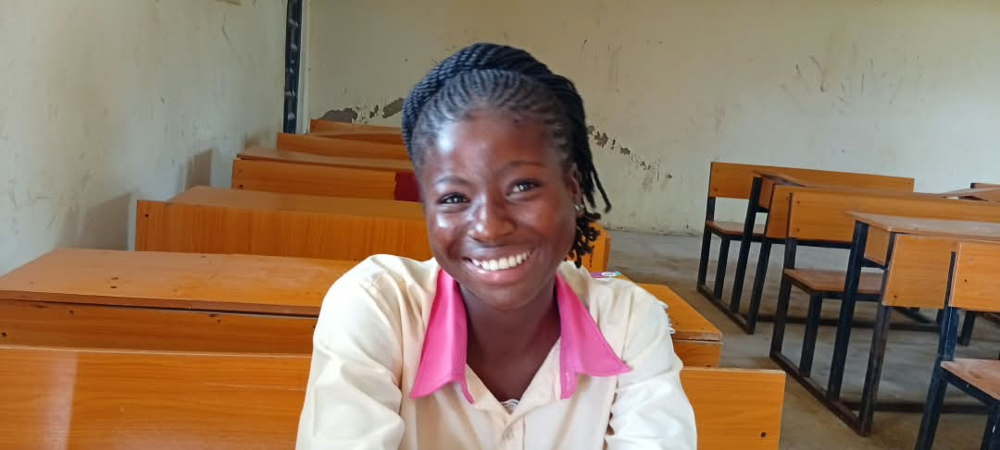

Medical outreach
Our clinics go out to the places that have none — rural communities, refugee settlements, schools and orphanages.


Getting a good education as a child is the essential building block of a tolerant, well-adjusted, healthy and prosperous adult. Families where parents completed primary and secondary school have higher incomes, better health and longer lives — and pass all of it on.
Our two programmes
A Community Education Centre brings learning, social welfare and empowerment together for the African child, inside the child’s own community — above all for the child who would otherwise have no hope of a sustainable livelihood. It rests on education and healthcare alone. Agriculture, economic empowerment and skills training are not separate programmes but parts of the education itself, so that the whole community gathers its children into a school system that provides for parents as well as pupils.

01
ProgrammeOur primary and secondary schools are centred where children have no educational opportunity at all, and equipped where they exist but lack the basics. Small classes, good teaching, and a holistic education that grows a child academically, personally and spiritually — with vocational training and skills acquisition at its heart.
02
ProgrammeOur clinic is built inside the school system, so a child’s health is never the reason they miss class. We concentrate on prevention, early detection, health education, and the treatment of diarrhoeal disease and malaria in the under-fives. We invest heavily in the first 1,000 days of life, the window that sets brain development, growth and immune strength. Child welfare carries the same premium, through HELP-A-KID.

What we run today
The schools and clinics we founded are being handed to the institutions that will run them from 2027 — see our track record. These are the programmes CORAfrica runs day to day, alongside our Community Education Centres, each one answering a different reason a child stops coming to class.
Agriculture on the timetable rather than in a textbook. Pupils work a real farm through a real season, and leave school with a skill that feeds a family.
Read more → ChildrenA child’s poverty should not decide whether that child is educated. HELP-A-KID pays the fees, and the costs around them, for acutely underprivileged children, so that they can finish the education they have already started.
Read more → FamiliesWhen a family cannot afford to keep a child in class, the barrier is income. The Economic Empowerment Programme lends to the parents — interest-free — so that a business can grow into school fees.
Read more → SkillsWe go a step beyond the conventional classroom, and equip our schools so that a student leaves with a trade as well as a certificate. The centres are designed as working pilots rather than lessons. Those we built in the past have been handed on with the schools we founded, and the next is planned for our new Community Education Centre.
Read more →
A child too ill to learn is not being educated. Our clinics sit inside the school system: free to the children who study there, and affordable to everybody else in the community.
Read more →Our clinics go out to the places that have none — rural communities, refugee settlements, schools and orphanages.
Personal hygiene, environmental sanitation, proper handwashing and safe drinking water, taught to pupils as part of school life.
Our registered farming company, founded in 2015: crops, poultry and livestock, and a training ground for rural farmers. A company, not one of our programmes.
Our next Community Education Centre, recently initiated, in Nasarawa State, near Abuja.


Why it matters
We work where poverty, insecurity and displacement meet — which is exactly where children are the first to lose their education.
Nigerian children are out of school — about 15% of the world’s total, according to UNICEF.
Nigerians were counted as multidimensionally poor in the country’s 2022 national survey.
Many rural communities live with violence, including attacks by herdsmen and militant groups in Nigeria. Across the border, the conflict in Cameroon has driven refugees into Cross River State.
Education
We build and equip primary and secondary schools in rural areas, creating sustainable livelihoods for indigent children and preventing the poverty, abuse and exploitation that follow when a child is out of class.
Conventional schooling, run properly — small classes, quality instruction, and preparation for an increasingly globalised world.
Children are encouraged to grow academically, personally and spiritually, in an environment of curiosity, creativity and enthusiasm.
Our educational component runs from primary through secondary to tertiary support and vocational skills acquisition.

VASAC
We go a step beyond the conventional classroom and equip our schools so that students leave with a trade. A centre is designed as a set of working pilots rather than lessons — computing, fashion design, beauty and aesthetics, home economics, music, technical drawing, visual arts, the building trades and agriculture. The centres we built in the past have been handed on with the schools we founded, and the next is planned for our new Community Education Centre.
Healthcare
We establish clinics inside the school system, and teach healthcare awareness and sanitation as part of everyday lessons. We place particular emphasis on preventing and treating diarrhoeal disease and malaria in children under five, and on the first 1,000 days of life. Our investment extends to the health of their mothers.
Preventive care, combating malnutrition, and community education on preventing the transmission of HIV.
A growing team providing health education and accompanying families through the process of seeking care.
Practical hand-washing hygiene, toilets, and water collection and treatment — taught in school, extended into the community and to refugee settlements.